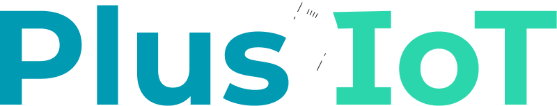

×Agente de prospecção da Plus
Sobe CSV. Conversa no WhatsApp. Lead qualificado pro time.
Recebe lista de leads, conversa no WhatsApp, devolve qualificado.
Time da Plus sobe CSV de leads. Agente abre conversa, qualifica BANT pra IoT (volume de chips, aplicação, operadora atual), registra resposta e move pelo kanban. Quando vira lead quente, vendedor humano assume.
Quatro passos. Cada um automático.
Arrasta CSV. Leads aparecem no app.
Deduplicação por telefone. Colunas auto-detectadas (nome, telefone, fonte, aplicação).
Resposta em menos de 30 segundos.
Lead novo dispara agente. Mensagem inicial personalizada com nome e contexto da fonte. Sem vendedor humano gastando 15min em lead frio.
Conversa com sentimento e nota interna.
Áudio é transcrito. Texto é analisado. Sentimento atualiza em tempo real. Quando vendedor abre o drawer, encontra resumo + transcrição + alerta interno.
Cards andam pelas etapas conforme conversa avança.
Edita prompt. Testa. Sobe.
Cada etapa do funil tem prompt próprio. Editor de Markdown + diff antes/depois + teste contra leads anteriores antes de subir em produção.
Visão executiva do funil.
Ajustes sem mexer no código.
Time da Plus mexe em ligação Evolution API, FAQs por aplicação IoT, número WhatsApp, modelo de IA — tudo via interface.
Avisada antes de você perceber.
Evolution API caiu
Alerta no WhatsApp do time em segundos. Dev de plantão responde.
Edge function timeout
Trace automático. N falhas em janela escala pro dev.
Prompt fora do esperado
Detecção de respostas estranhas antes de virar problema.
3 erros 502 em 1min
edge/whatsapp-sendLead afetado: Carlos M. (#1247) 14:42
Refinamento contínuo do agente.
Toda semana o time Artemis revisa amostra de conversas reais. Identifica onde o agente confundiu chip M2M com SIM corporativo, perdeu pergunta de redundância de operadora, ou não diferenciou rastreador veicular de logger agro.
Suporte humano direto. Sem ticket, sem fila.
- Canal WhatsApp dedicado pro time da Plus
- Resposta de dev real, não bot
- Mesma pessoa que conhece o sistema
- Histórico fica registrado pra contexto
O que entra a partir daqui.
30 dias
Atividades & tasks
- Tasks por lead (ligar, mandar proposta)
- Timeline de atividades no drawer
- Lembretes automáticos pro vendedor
60 dias
Importação em massa
- CSV bulk com mapeamento de colunas
- Bulk actions (mover, taggear, atribuir)
- Custom fields por vertical IoT
90 dias
Inteligência
- Resumo automático de conversas
- Forecast de fechamento por etapa
- Score de qualificação por lead
Vamos seguir.
Time Artemis disponível no WhatsApp pra qualquer ajuste.